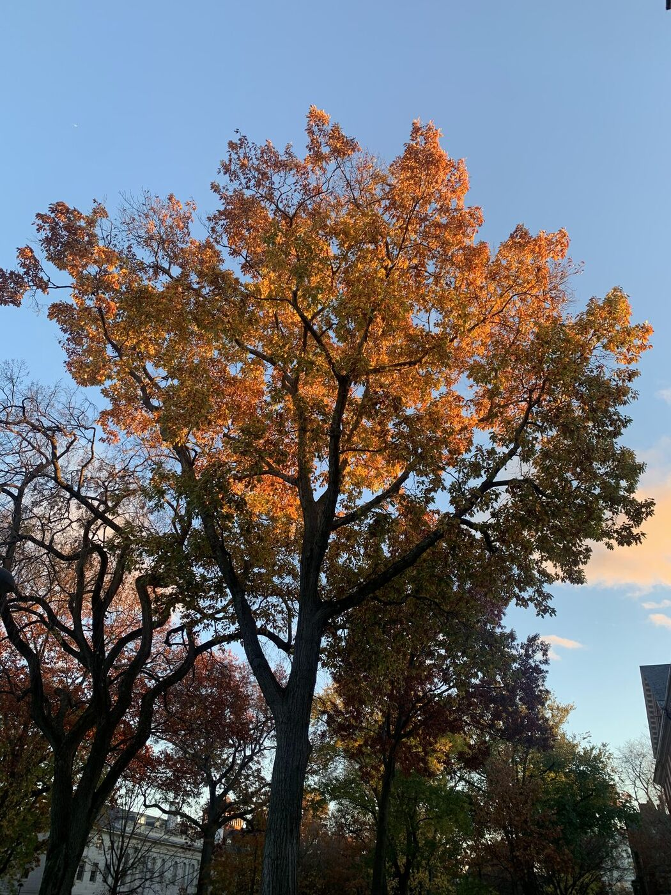

Come to the table.
Understanding has to come before agreement.
There is a seat for you in this conversation.
Values As Vision is early, which means your ideas and presence can shape it. We’d love to hear from you.
Participate
Join a facilitated conversation series. We’re forming groups for MIT Sloan in Spring 2027 (students, faculty, and administrators), and will later invite community members around real-world wedge issues.
Facilitate
Help hold the container. We’re recruiting and training facilitators who bring curiosity, a growth mindset, and comfort with difficult conversations.
Partner locally
Are you a nonprofit, faith community, union, company, or civic group with a stake in a local environmental issue? We work through local organizations to find authentic community leaders.
Advise or support
We’re forming a board of advisors this fall, and welcome feedback on our open questions about corporate participation and measuring impact.
Start a conversation with us.
The easiest way to reach us is by email. Tell us who you are, what you care about, and how you’d like to be involved.
Alida Monaco, Founder · Harvard Kennedy School MPP / MIT Sloan MBA dual-degree candidate